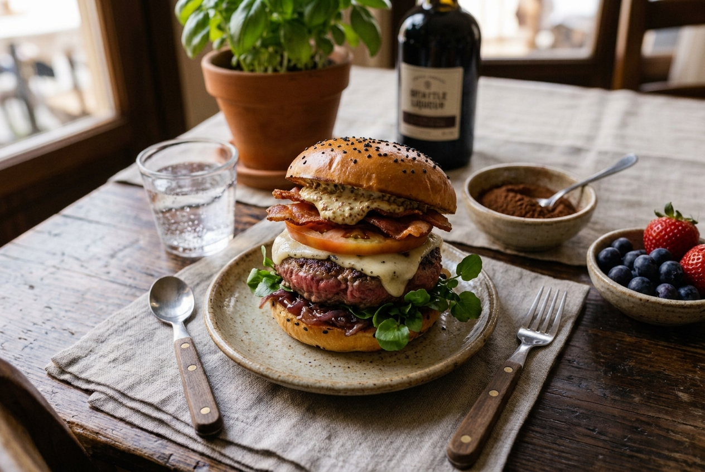
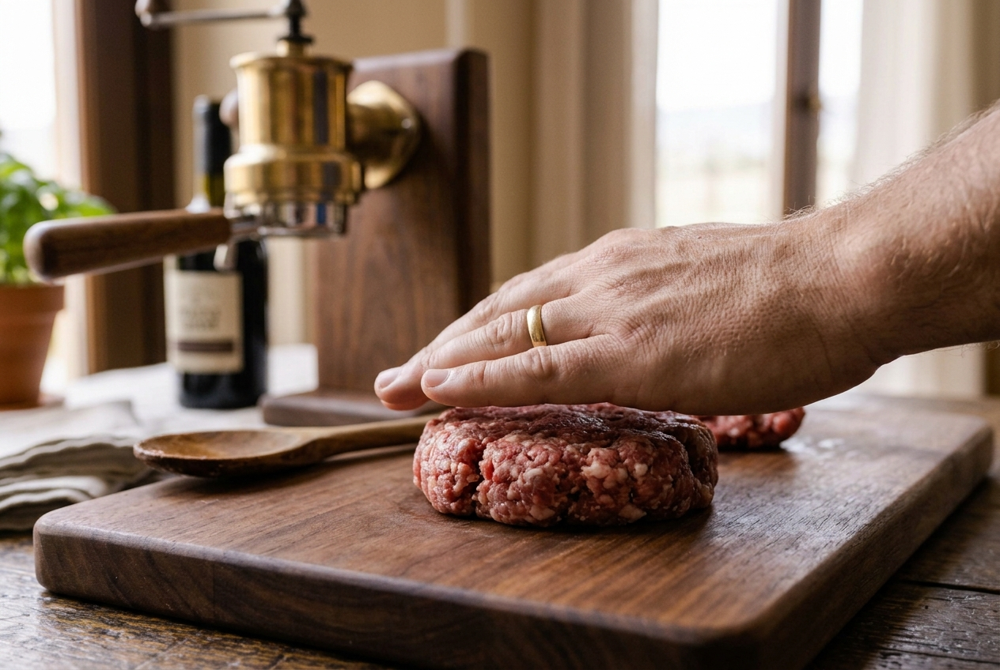
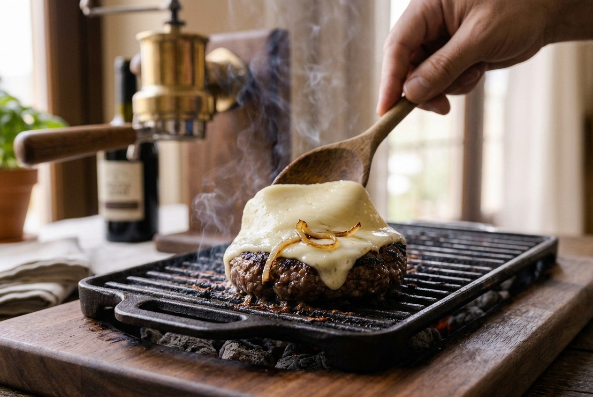
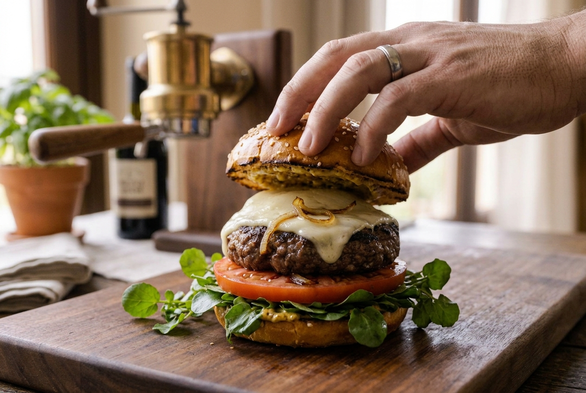

Hamburguesa Gourmet

La hamburguesa gourmet es el pilar fundamental de la cocina moderna de autor. Aunque parece una preparación sumamente sencilla debido a la brevedad de sus elementos principales, su verdadero éxito radica en la calidad de las materias primas utilizadas y en el control del punto de cocción de la carne, el cual debe fusionarse delicadamente con los jugos naturales y el queso fundido.
Para conseguir un bocado equilibrado y sin exceso de sequedad, los cocineros tradicionales recomiendan utilizar cortes de carne seleccionados con un porcentaje óptimo de grasa infiltrada, picados y moldeados sin prensar en exceso. La cocción debe realizarse a fuego vivo en una plancha caliente, permitiendo que el exterior forme una costra caramelizada mientras el interior conserva su jugosidad, fundiendo el queso en los últimos minutos bajo una tapa.
Finalmente, el secreto técnico definitivo consiste en ensamblar la hamburguesa sobre un pan brioche ligeramente tostado junto con salsas artesanales y vegetales frescos que aporten textura. Este proceso, conocido en la alta cocina informal como el ensamblaje estructural, genera una armonía perfecta de sabores que se complementan mutuamente, garantizando un plato jugoso y lleno de sabor tradicional en cada bocado.
El Proceso Paso a Paso



Videoguía Demostrativa
A continuación, puedes visualizar una demostración en vídeo que detalla las técnicas profesionales de manipulación de la pasta y ligación de salsas tradicionales en cocina: